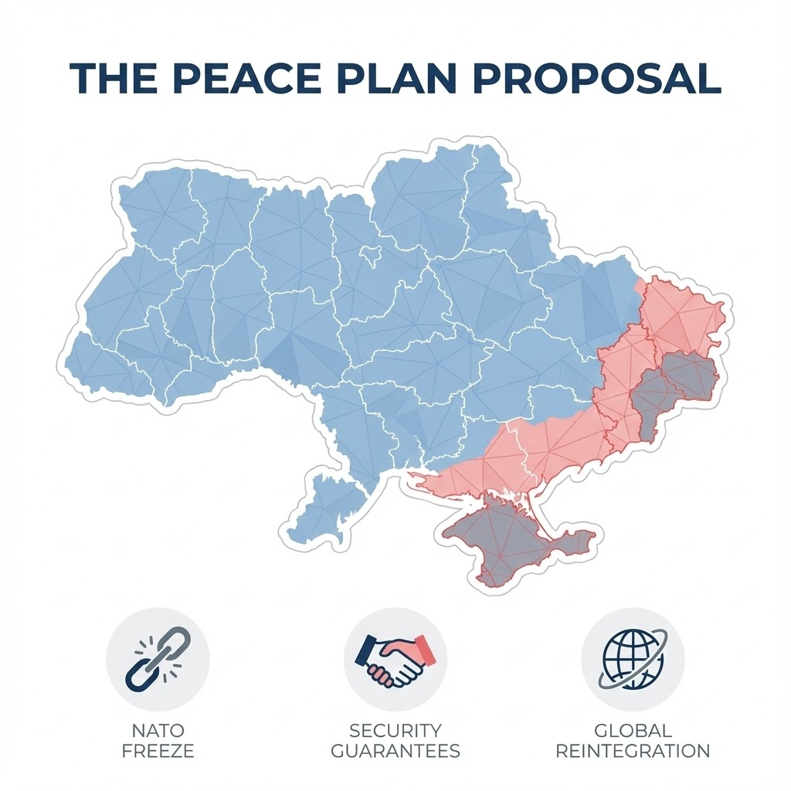

A Look at the "Prolonged Invasion" and the Controversial New Peace Proposals
As the war in Ukraine stretches into a prolonged conflict, the geopolitical landscape has shifted dramatically. With military setbacks on the frontlines and a changing administration in the United States, the path to peace seems more complicated than ever. Based on recent reports, we dive into why a ceasefire remains elusive and what the proposed "Trump Plan" means for the region.
To understand the current deadlock, we must look back. Shortly after Russia's invasion in February 2022, diplomatic channels were actually open. By March 2022, talks in Istanbul suggested a tentative agreement: Ukraine was ready to renounce NATO membership in exchange for security guarantees.
However, this process collapsed. Reports indicate that Western governments, including then-British Prime Minister Boris Johnson, were hesitant to provide the security guarantees Ukraine demanded, encouraging Kyiv to "continue to fight" instead. This decision set the stage for a long war, with Russia eventually annexing four more Ukrainian territories.
Fast forward to the present scenario described in recent analysis (referencing a timeline into 2025), and the situation on the ground has deteriorated for Kyiv:
With the return of Donald Trump to the White House (as projected in the article's timeline), the trans-Atlantic consensus has fractured. Viewing the conflict as a "lost war," the new administration is circulating a controversial 28-point peace plan aimed at restarting talks. The proposal is widely seen as favoring Moscow:
"The plan proposes recognition of Russian control over key territories... Ukraine would have to cede territory, recognize Russian control of its regions and abandon NATO aspirations."
Ukrainian President Volodymyr Zelenskyy finds himself in an impossible position. His term has technically expired (held under martial law), corruption scandals have shaken his administration, and the economy is entirely propped up by Western aid.
Zelenskyy once insisted that peace was only possible if Russia withdrew from all seized territories. Now, faced with waning U.S. support, he is being forced to choose between his nation's dignity and the demands of his most critical partner.
The tragedy of the current situation is the weakening of Ukraine's hand. In Istanbul in 2022, there was an outline for a settlement that kept more territory under Ukrainian control. Today, any ceasefire along the current frontline would leave more than 20% of pre-2014 Ukraine in Russian hands.
If Zelenskyy accepts the deal, he faces severe political consequences at home. If he rejects it, Ukraine risks losing support entirely, leading to a prolonged and potentially devastating war.